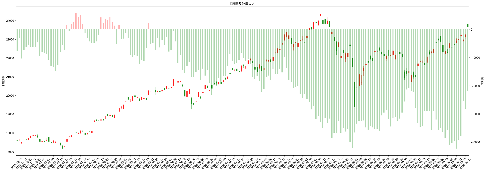
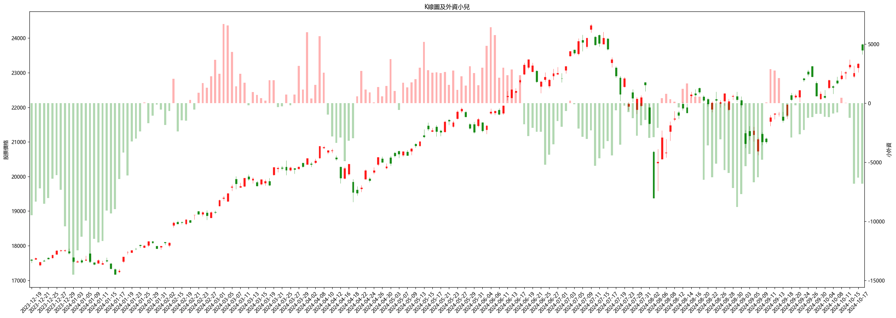
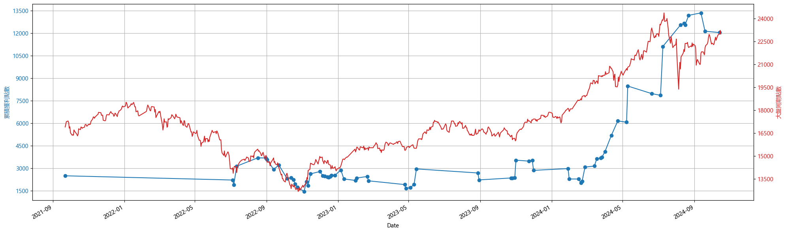

指數策略筆記

台指期多空點位
(一) 策略發想
台指期是許多人拿來長期持有並使用無限轉倉之術取代0050或006208，不僅可以降低管理費，也能透過適度的槓桿操作活化資金。如果能在長期持有的狀態下持續作價差，是否能更加放大獲利。
(二) 跟著籌碼走
1. 大外資
基本上今年外資的未平倉口數皆呈現淨賣超，但台指仍在台積電的帶動下持續向上，也因為外資整體還有避險單及選擇權部位，加上外資通常會看比較長，可能幾個季度或是年以上，因此無法在短期看出與台指期是否有關連性。 
2. 小外資
改用網路上俗稱的小外資，將前五大特定的外資部位移除(外資 - 五大外資(特定))後觀察走勢，可以發現相關性好像比較高一點。

小外資定義可以參考微股力 小外資計算
(三) 回測績效
1. 跟單小外資
盤後籌碼呈現小外資買進，隔天開盤就買，小外資賣出，隔天開盤就賣
同時間點 :
- 大盤累積獲利:8755
- 外資小兒法累積:8895
- 進出次數:37
- 第一次買進時間:2022-07-05
- 最後一次賣出時間:2024-10-16
比較同期大盤，進進出出37次但只贏大盤140點

List
- List item
- List item
- List item
- List item
- List item
Unordered List
- List item
- List item
- List item
- List item
- List item
Code and Syntax Highlighting
Inline code has back-ticks around it.
var s = "JavaScript syntax highlighting";
alert(s);
s = "Python syntax highlighting"
print s
No language indicated, so no syntax highlighting.
But let's throw in a <b>tag</b>.
Blockquote
This is a blockquote example.
Inline HTML
You can also use raw HTML in your Markdown, and it’ll mostly work pretty well.
Tables
Colons can be used to align columns.
| Tables | Are | Cool |
|---|---|---|
| col 3 is | right-aligned | $1600 |
| col 2 is | centered | $12 |
| zebra stripes | are neat | $1 |
There must be at least 3 dashes separating each header cell. The outer pipes (|) are optional, and you don’t need to make the raw Markdown line up prettily. You can also use inline Markdown.
| Markdown | Less | Pretty |
|---|---|---|
| Still | renders |
nicely |
| 1 | 2 | 3 |
Image